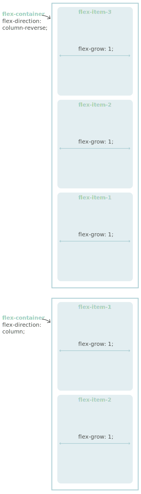

Project Setup
- Before starting to code any webpage, it's a good practice to sketch the
layout on paper first.
- For this project, FLEX is used to build the entire layout.
- FLEX allows to build web pages that are responsive to large and small screen sizes.
desktop-first design
- This project targets large screens for the initial design.
Later, media queries are added to scale down the design for smaller screens.
Smaller screens layout
Media queries written to make the layout fit smaller screens
